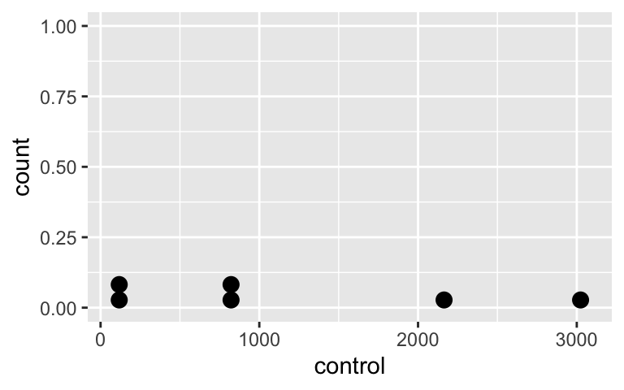
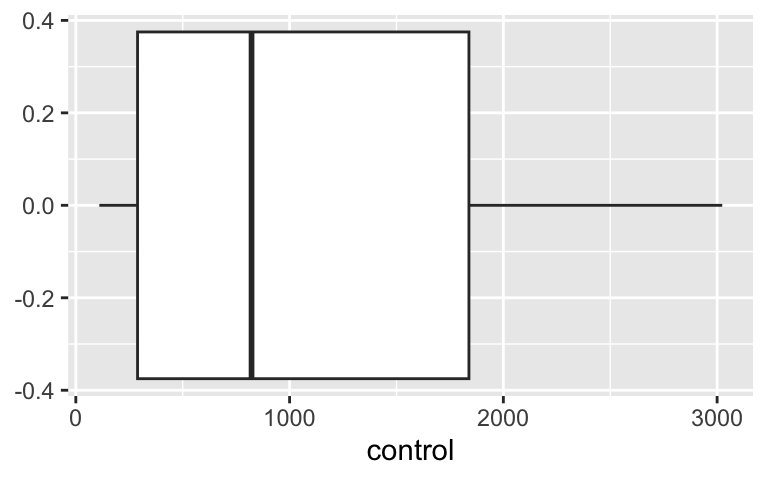

Day 17: Nonparametric tests - Supplemental material
Other TB
2024-12-04
Load packages
- Packages need to be loaded every time you restart R or render an Qmd file
- You can check whether a package has been loaded or not
- by looking at the Packages tab and
- seeing whether it has been checked off or not
MoRitz’s tip: write “nice” R code
Check out the tidyverse style guide: https://style.tidyverse.org/index.html
Goals for today (Supplemental material)
Why us a nonparametric approach?
What the following tests are & when to use them
Sign test
- for paired data or single samples
(Wilcoxon) sign-rank test
- for paired data or single samples
- accounts for sizes of differences
Wilcoxon Rank-sum test
- for two independent samples
- a.k.a Mann-Whitney U test
Kruskal-Wallis test
- nonparametric ANOVA test
How to use R for each test & interpret the results
Additional resource
- Chapter 13: Nonparametric tests of Pagano’s Principles of Biostatistics, 2022 edition
- Can download chapter from OHSU library eBook at https://ebookcentral.proquest.com/lib/ohsu/detail.action?docID=6950388&pq-origsite=primo
Nonparametric tests
Background: parametric vs nonparametric
Prior inference of means methods had conditions assuming the underlying population(s) was (were) normal (or at least approximately normal).
Normal distribution is completely described (parameterized) by two parameters: \(\mu\) and \(\sigma\).
The first was often the parameter of interest, while the latter was assumed known ( \(Z\)-test) or estimated ( \(t\)-tests).
The above are therefore described as parametric procedures.
Nonparametric procedures
- Make fewer assumptions about the structure of the underlying population from which the samples were collected.
- Work well when distributional assumptions are in doubt.
The good and the bad about nonparametric tests
Good
- Fewer assumptions
- Tests are based on ranks
- Therefore outliers have no greater influence than non-outliers.
- Since tests are based on ranks we can apply these procedures to ordinal data
- (where means and standard deviations are not meaningful).
Drawbacks
- Less powerful than parametric tests (due to loss of information when data are converted to ranks)
- While the test is easy, it may require substantial (computer) work to develop a confidence interval [by “inverting” the test].
- Theory was developed for continuous data (where ties are not possible); if population or data contain many ties, then a correction to the procedures must be implemented.
- Some procedures have “large” and “small” sample versions; the small sample versions require special tables or a computer.
Sign test
For paired data or single samples
Example: Intraocular pressure of glaucoma patients
- Intraocular pressure of glaucoma patients is often reduced by treatment with adrenaline.
- A new synthetic drug is being considered, but it is more expensive than the current adrenaline alternative.
- 7 glaucoma patients were treated with both drugs:
- one eye with adrenaline and
- the other with the synthetic drug
- Reduction in pressure was recorded in each eye after following treatment (larger numbers indicate greater reduction)
IOP_table <- tibble(
Patient = 1:7,
Adren = c(3.5, 2.6, 3, 1.9, 2.9, 2.4, 2),
Synth = c(3.2, 3.1, 3.3, 2.4, 2.9, 2.8, 2.6)
) %>%
mutate(
d = Synth - Adren,
Sign = case_when(
d < 0 ~ "-",
d > 0 ~ "+"
)
)
IOP_table %>% gt()| Patient | Adren | Synth | d | Sign |
|---|---|---|---|---|
| 1 | 3.5 | 3.2 | -0.3 | - |
| 2 | 2.6 | 3.1 | 0.5 | + |
| 3 | 3.0 | 3.3 | 0.3 | + |
| 4 | 1.9 | 2.4 | 0.5 | + |
| 5 | 2.9 | 2.9 | 0.0 | NA |
| 6 | 2.4 | 2.8 | 0.4 | + |
| 7 | 2.0 | 2.6 | 0.6 | + |
- d is the difference in reduction of pressure: Synth - Adren
- Sign is
+if the difference is positive and-if the difference is negative
Visualize the differences
Visualize the differences in reduction of pressure \(d\) : Synth - Adren

Hypotheses & “statistic” (Sign test)
Hypotheses
\(H_0:\) The median difference in the population is 0
\(H_a:\) The median difference in the population is NOT 0
“Statistic”
\(D^+\) = number of positive differences
\(D^-\) = number of negative differences
What are \(D^+\) and \(D^-\) for our example?
Exact p-value (Sign test)
If the median difference is 0 ( \(H_0\) is true) , then * half the population consists of positive differences * while half have negative differences.
Let \(p=P(\textrm{neg. diff.})=P(\textrm{pos. diff.})= 0.5\)
- If the median difference is 0 ( \(H_0\) is true), * then a sample of \(n\) differences * behaves like \(n\) trials in a binomial experiment * where “success” is analogous to seeing a positive difference. * By symmetry ( \(p=0.5\) ), the same distribution applies to negative differences, i.e.,
- Thus the (exact) p-value is calculated using the Binomial distribution
Glaucoma example (exact) p-value
- 7 differences:
- 1 negative ( \(D^-\) )
- 5 were positive ( \(D^+\) )
- 1 difference is 0 and is discarded
- Thus the effective sample size is \(n=6\).
One-sided p-value = probability that we would see 1 or fewer negative signs among the \(n=6\) differences, if the median difference is really 0
Two-sided p-value = 2 \(\times\) One-sided p-value
\[D^- \sim \textrm{Bin}(n=6,p=0.5)\]
\[p-value = P(D^- \leq 1) \\ = P(D^-=0) + P(D^-=1) \\ = \frac{6!}{0!6!} (0.5)^6 + \frac{6!}{1!5!} (0.5)^6 \\ \approx 0.1094\]
\[p-value \times 2 \approx 0.2188\]
Sign test in R: Glaucoma example
Below we create the dataset as a tibble (and add the signs):
IOP <- tibble(
Patient = 1:7,
Adren = c(3.5, 2.6, 3, 1.9, 2.9, 2.4, 2),
Synth = c(3.2, 3.1, 3.3, 2.4, 2.9, 2.8, 2.6)
) %>%
mutate(d = Synth - Adren,
Sign = case_when(
d < 0 ~ "-",
d > 0 ~ "+"))
IOP %>% gt()| Patient | Adren | Synth | d | Sign |
|---|---|---|---|---|
| 1 | 3.5 | 3.2 | -0.3 | - |
| 2 | 2.6 | 3.1 | 0.5 | + |
| 3 | 3.0 | 3.3 | 0.3 | + |
| 4 | 1.9 | 2.4 | 0.5 | + |
| 5 | 2.9 | 2.9 | 0.0 | NA |
| 6 | 2.4 | 2.8 | 0.4 | + |
| 7 | 2.0 | 2.6 | 0.6 | + |
Recall we’re testing the population median.
Here’s the sample median:
Sign test in R: Glaucoma example (specifying both columns)
library(BSDA) # new package!! Make sure to first install it
# Can't "tidy" the output
SIGN.test(x = IOP$Synth, y = IOP$Adren, alternative = "two.sided", conf.level = 0.95)
Dependent-samples Sign-Test
data: IOP$Synth and IOP$Adren
S = 5, p-value = 0.2187
alternative hypothesis: true median difference is not equal to 0
95 percent confidence interval:
-0.2057143 0.5685714
sample estimates:
median of x-y
0.4
Achieved and Interpolated Confidence Intervals:
Conf.Level L.E.pt U.E.pt
Lower Achieved CI 0.8750 0.0000 0.5000
Interpolated CI 0.9500 -0.2057 0.5686
Upper Achieved CI 0.9844 -0.3000 0.6000Sign test in R: Glaucoma example (specifying differences)
# Note output calls this a "One-sample Sign-Test"
SIGN.test(x = IOP$d, alternative = "two.sided", conf.level = 0.95)
One-sample Sign-Test
data: IOP$d
s = 5, p-value = 0.2187
alternative hypothesis: true median is not equal to 0
95 percent confidence interval:
-0.2057143 0.5685714
sample estimates:
median of x
0.4
Achieved and Interpolated Confidence Intervals:
Conf.Level L.E.pt U.E.pt
Lower Achieved CI 0.8750 0.0000 0.5000
Interpolated CI 0.9500 -0.2057 0.5686
Upper Achieved CI 0.9844 -0.3000 0.6000Conclusion
Recall the hypotheses to the sign test:
\(H_0:\) The median population difference in reduction of intraocular pressure in treatment with adrenaline vs. new synthetic drug is 0.
\(H_a:\) The median population difference in reduction of intraocular pressure in treatment with adrenaline vs. new synthetic drug is NOT 0.
- Significance level: \(\alpha\) = 0.05
- p-value = 0.2188
Conclusion:
The median difference in reduction of intraocular pressure between eyes being treated with the synthetic drug and adrenaline for seven glaucoma patients was 0.4 (95% CI: -0.2, 0.6).
There is insufficient evidence the reduction in intraocular pressure differs when using the synthetic drug and adrenaline (2-sided sign test \(p\)-value = 0.219).
Sign test with large samples: p-value normal approximation
- If the sample size is large, say greater than 20,
- then binomial probabilities can be approximated using normal probabilities
- Normal approximation:
\[\mu = np =n(0.5)=n/2\\ \sigma=\sqrt{np(1-p)}=\sqrt{n(0.5)(0.5)}= \sqrt{n}/2\]
- Thus we have the test statistic:
\[z=\frac{D^- −n/2}{\sqrt{n}/2}\]
- With access to a computer, it’s better to use the exact binomial probabilities instead of the normal approximation.
Sign test with one sample
- One can use the sign test when testing just one sample.
- Note that we did this when in R, when running the sign test using just the differences.
- For one sample, we can specify the null population median value:
\(H_0:\) The population median is \(m\)
\(H_a:\) The population median is NOT \(m\)
Example: Run sign test for paired data with null \(m = 0.7\):
One-sample Sign-Test
data: IOP$d
s = 0, p-value = 0.01562
alternative hypothesis: true median is not equal to 0.7
95 percent confidence interval:
-0.2057143 0.5685714
sample estimates:
median of x
0.4
Achieved and Interpolated Confidence Intervals:
Conf.Level L.E.pt U.E.pt
Lower Achieved CI 0.8750 0.0000 0.5000
Interpolated CI 0.9500 -0.2057 0.5686
Upper Achieved CI 0.9844 -0.3000 0.6000(Wilcoxon) Signed-rank test
For paired data or single samples;
accounts for sizes of differences
(Wilcoxon) Signed-rank test
- Like the sign test, the (Wilcoxon) signed-rank test is used for
- paired samples (i.e., a single set of differences) or
- a one-sample comparison against a specified value
- However, this test does make use of information concerning the size of the differences.
Hypotheses
\(H_0:\) the population is symmetric around some value \(\tilde{\mu}_0\)
\(H_a:\) the population is not symmetric around some value \(\tilde{\mu}_0\)
- Even if the population has a mean/median equal to \(\tilde{\mu}_0\), the test may reject the null if the population isn’t symmetric, thus only use if the data (differences) are symmetric.
- If the population is symmetric
- then the mean and median coincide,
- thus often the null hypothesis is phrased in terms of the median difference being 0
Example: calculate signed ranks
- Rank the absolute values of the differences from smallest to largest
- For ties, take the average of the highest and lowest tied ranks
- I.e. if ranks 3-7 are tied, then assign (3+7)/2 = 5 as the rank
- Then calculate the signed ranks as +/- the rank depending on whether the sign is +/-
IOP_ranks <- IOP %>%
mutate(
Rank = c(1.5, 4.5, 1.5, 4.5, NA, 3, 6),
Signed_rank = case_when(
d < 0 ~ -Rank,
d > 0 ~ Rank
)
)
IOP_ranks %>% gt()| Patient | Adren | Synth | d | Sign | Rank | Signed_rank |
|---|---|---|---|---|---|---|
| 1 | 3.5 | 3.2 | -0.3 | - | 1.5 | -1.5 |
| 2 | 2.6 | 3.1 | 0.5 | + | 4.5 | 4.5 |
| 3 | 3.0 | 3.3 | 0.3 | + | 1.5 | 1.5 |
| 4 | 1.9 | 2.4 | 0.5 | + | 4.5 | 4.5 |
| 5 | 2.9 | 2.9 | 0.0 | NA | NA | NA |
| 6 | 2.4 | 2.8 | 0.4 | + | 3.0 | 3.0 |
| 7 | 2.0 | 2.6 | 0.6 | + | 6.0 | 6.0 |
New: Calculate ranks using R’s rank() function
- Below I create the ranks using R’s
rank()function that has an optionties.methodto specify how to calculate ties. - This doesn’t require first sorting the data.
- However, it includes a difference of 0 in the ranking, and thus below I first remove the row with \(d=0\) from the data.
- In the output below, I called this column
Rank_R.
IOP_Ranks_R <- IOP_ranks %>%
filter(d != 0) %>%
mutate(
# create column with absolute values of differences
# it's the absolute values that get ranked
abs_d = abs(d),
# create column with ranks that accounts for ties using R's rank() function
# you don't need to first sort the data to use this command
Rank_R = rank(abs_d, ties.method = "average"),
Signed_Rank_R = case_when(
d < 0 ~ -Rank_R,
d > 0 ~ Rank_R
)
)
IOP_Ranks_R %>% gt()| Patient | Adren | Synth | d | Sign | Rank | Signed_rank | abs_d | Rank_R | Signed_Rank_R |
|---|---|---|---|---|---|---|---|---|---|
| 1 | 3.5 | 3.2 | -0.3 | - | 1.5 | -1.5 | 0.3 | 1.5 | -1.5 |
| 2 | 2.6 | 3.1 | 0.5 | + | 4.5 | 4.5 | 0.5 | 4.5 | 4.5 |
| 3 | 3.0 | 3.3 | 0.3 | + | 1.5 | 1.5 | 0.3 | 1.5 | 1.5 |
| 4 | 1.9 | 2.4 | 0.5 | + | 4.5 | 4.5 | 0.5 | 4.5 | 4.5 |
| 6 | 2.4 | 2.8 | 0.4 | + | 3.0 | 3.0 | 0.4 | 3.0 | 3.0 |
| 7 | 2.0 | 2.6 | 0.6 | + | 6.0 | 6.0 | 0.6 | 6.0 | 6.0 |
Test statistic (Wilcoxon) Signed-rank test
If the null is true:
The population is symmetric around some point ( \(\tilde{\mu}_0 = 0\) , typically), and
The overall size of the positive ranks should be about the same as the overall size of negative ranks.
Note:
- The sum of the ranks \(1,2,\dotsc, n\) is always \(n(n+1)/2\),
- which can be broken down as the
- sum of the positive ranks ( \(T^+\) )
- plus the sum of the negative ranks ( \(T^-\) )
Thus, any of the following can be used as a test statistic and will lead to the same conclusion:
- \(T^+\)
- \(T^-\)
- \(T^+\) - \(T^-\)
- \(\min(T^+,T^−) = T_0\)
Example: calculate sums of signed ranks
| Patient | Adren | Synth | d | Sign | Rank | Signed_rank |
|---|---|---|---|---|---|---|
| 1 | 3.5 | 3.2 | -0.3 | - | 1.5 | -1.5 |
| 2 | 2.6 | 3.1 | 0.5 | + | 4.5 | 4.5 |
| 3 | 3.0 | 3.3 | 0.3 | + | 1.5 | 1.5 |
| 4 | 1.9 | 2.4 | 0.5 | + | 4.5 | 4.5 |
| 5 | 2.9 | 2.9 | 0.0 | NA | NA | NA |
| 6 | 2.4 | 2.8 | 0.4 | + | 3.0 | 3.0 |
| 7 | 2.0 | 2.6 | 0.6 | + | 6.0 | 6.0 |
- Sum of the positive ranks
- \(T^+\) = 1.5 + 3 + 4.5 + 4.5 + 6 = 19.5
- Sum of the negative ranks
- \(T^-\) = -1.5
- The sum of the ranks \(1,2,\dotsc, n\) is always \(n(n+1)/2\):
- \(n(n+1)/2 = 6(7)/2 = 21\)
- \(T^+ + |T^-| = 19.5 + |-1.5| = 21\)
Exact p-value (Wilcoxon) Signed-rank test (fyi) (1/2)
- Exact p-value is preferable
- This is the default method in R’s
wilcox.test()- if the samples contain less than 50 finite values
- and there are no ties
- R will automatically use normal approximation method if there are ties
- This is the default method in R’s
- We will not be calculating the exact p-value “by hand.” We will be using R for this.
\[p-value = 2 * P(\min(T^+,T^−) \leq t)\]
- \(t\) is the smaller of the calculated sums of the positive and negative ranks
- To calculate the exact p-value, we need the probability of each possible sum of ranks.
Exact p-value (Wilcoxon) Signed-rank test (fyi) (2/2)
- To calculate the exact p-value, we need the probability of each possible sum of ranks:
- list all possible combinations of positive and negative ranks for the sample size,
- calculate the sum of the positive ranks ( \(T^+\) ) for each possible combination (or \(T^-\) ), and
- then figure out the probability of each possible \(T^+\) (assuming all combinations are equally likely)
Example when \(n=3\) : (from https://online.stat.psu.edu/stat415/lesson/20/20.2)
See https://online.stat.psu.edu/stat415/lesson/20/20.2 for more details.
Normal approximation p-value (Wilcoxon) Signed-rank test (fyi)
- Normal approximation method:
- If the number of non-zero differences is at least 16, then a normal approximation can be used.
- Have the option to apply a continuity correct (default) or not
- We will not be calculating the p-value “by hand.” We will be using R for this.
Test statistic:
\[Z_{T_{min}} = \frac{T_{min} - \frac{n(n+1)}{4}}{\sqrt{\frac{n(n+1)(2n+1)}{24}}}\]
- \(T_{min} = \min(T^+,T^−)\)
- \(n\) = sample size
- Test statistic \(Z_{T_{min}}\) follows a standard normal distribution \(N(0,1)\)
- Use normal distribution to calculate p-value
See https://online.stat.psu.edu/stat415/lesson/20/20.2 for more details.
(Wilcoxon) Signed-rank test in R: Glaucoma example
“Attempt” with exact p-value & specifying columns for paired data
# Exact p-value
wilcox.test(x = IOP$Synth, y = IOP$Adren, paired = TRUE,
alternative = c("two.sided"), mu = 0,
exact = TRUE)Warning in wilcox.test.default(x = IOP$Synth, y = IOP$Adren, paired = TRUE, :
cannot compute exact p-value with tiesWarning in wilcox.test.default(x = IOP$Synth, y = IOP$Adren, paired = TRUE, :
cannot compute exact p-value with zeroes
Wilcoxon signed rank test with continuity correction
data: IOP$Synth and IOP$Adren
V = 19.5, p-value = 0.07314
alternative hypothesis: true location shift is not equal to 0(Wilcoxon) Signed-rank test in R: Glaucoma example
“Attempt” with exact p-value & running one sample test with differences
# Exact p-value
wilcox.test(x = IOP$d,
alternative = c("two.sided"), mu = 0,
exact = TRUE, correct = TRUE)Warning in wilcox.test.default(x = IOP$d, alternative = c("two.sided"), :
cannot compute exact p-value with tiesWarning in wilcox.test.default(x = IOP$d, alternative = c("two.sided"), :
cannot compute exact p-value with zeroes
Wilcoxon signed rank test with continuity correction
data: IOP$d
V = 19.5, p-value = 0.07314
alternative hypothesis: true location is not equal to 0(Wilcoxon) Signed-rank test in R: Glaucoma example
“Attempt” with approximate p-value & specifying columns for paired data
# Normal approximation with continuity correction
wilcox.test(x = IOP$Synth, y = IOP$Adren, paired = TRUE,
alternative = c("two.sided"), mu = 0,
exact = FALSE, correct = TRUE)
Wilcoxon signed rank test with continuity correction
data: IOP$Synth and IOP$Adren
V = 19.5, p-value = 0.07314
alternative hypothesis: true location shift is not equal to 0No more warnings!! However,… should we be using the normal approximation here?
Conclusion
Recall the hypotheses to the (Wilcoxon) Signed-rank test:
\(H_0:\) the population difference in reduction of intraocular pressure in treatment with adrenaline vs. new synthetic drug is symmetric around \(\tilde{\mu}_0 =0\)
\(H_a:\) the population difference in reduction of intraocular pressure in treatment with adrenaline vs. new synthetic drug is not symmetric around \(\tilde{\mu}_0 =0\)
- Significance level: \(\alpha\) = 0.05
- p-value = 0.07314
Conclusion:
There is insufficient evidence the differences in reduction in intraocular pressure differs between the synthetic drug and adrenaline are symmetric about 0 (2-sided Wilcoxon signed rank test \(p\)-value = 0.07314)
However,…
Wilcoxon rank-sum test
For two independent samples
a.k.a Mann-Whitney U test
Wilcoxon rank-sum test
The nonparametric alternative to the two-sample \(t\)-test
- used to analyze two samples selected from separate (independent) populations
Also called the Mann-Whitney U test.
Unlike the signed-rank test, there is no need to assume symmetry
Necessary condition is that the two populations being compared
- have the same shape (both right skewed, both left skewed, or both symmetric),
- so any noted difference is due to a shift in the median
Since they have the same shape, when summarizing the test, we can describe the results in terms of a difference in medians.
Hypotheses:
\(H_0:\) the two populations have the same median
\(H_a:\) the two populations do NOT have the same median
Example
Dr. Priya Chaudhary (OHSU) examined the evoked membrane current of dental sensory neurons (in rats) under control conditions and a mixture of capsaicin plus capsazepine (CPZ). J. Dental Research} 80:1518–23, 2001.
Visualize the data
Do the independent samples have the same distribution?
Control group



Cap + CPZ group


Calculating ranks and test statistic \(W\)
Combine the two samples together (keep track of which observations came from each sample).
Rank the full set of \(N=n_1 + n_2\) observations.
- If ties exist, assign average ranks to the tied values (as with the signed-rank test).
Sum the ranks corresponding to those observations from the smaller sample.
- This is a time-saving step; you could also have used the larger sample.
- Call this sum \(W\).
If \(n_1, n_2\) are both less than 10, then use an exact test (can only be done if no ties are present)
- otherwise use the large-sample normal approximation.
In our example, both groups have equal n; choose either for computing W.
\[W_{CPZ}=1+2+3+6+7+8 = 27\]
\[W_{control}=4+5+9+10+11+12 = 51\]
CPZdata_long <- CPZdata %>%
pivot_longer(cols = c(control,cap_CPZ),
names_to = "Group",
values_to = "Current") %>%
arrange(Current) %>%
mutate(Rank = 1:12)
CPZdata_long %>% gt()| Group | Current | Rank |
|---|---|---|
| cap_CPZ | 55 | 1 |
| cap_CPZ | 75 | 2 |
| cap_CPZ | 94 | 3 |
| control | 110 | 4 |
| control | 125 | 5 |
| cap_CPZ | 130 | 6 |
| cap_CPZ | 232 | 7 |
| cap_CPZ | 426 | 8 |
| control | 780 | 9 |
| control | 864 | 10 |
| control | 2164 | 11 |
| control | 3024 | 12 |
New: calculate ranks’s using rank()
- Below I create the ranks using R’s
rank()function that has an optionties.methodto specify how to calculate ties. - This doesn’t require first sorting the data.
- In the output below, I called this column
Rank_R.
CPZdata_long <- CPZdata_long %>%
mutate(
# create column with ranks that accounts for ties using R's rank() function
# you don't need to first sort the data to use this command
Rank_R = rank(Current, ties.method = "average")
)
CPZdata_long %>% gt()| Group | Current | Rank | Rank_R |
|---|---|---|---|
| cap_CPZ | 55 | 1 | 1 |
| cap_CPZ | 75 | 2 | 2 |
| cap_CPZ | 94 | 3 | 3 |
| control | 110 | 4 | 4 |
| control | 125 | 5 | 5 |
| cap_CPZ | 130 | 6 | 6 |
| cap_CPZ | 232 | 7 | 7 |
| cap_CPZ | 426 | 8 | 8 |
| control | 780 | 9 | 9 |
| control | 864 | 10 | 10 |
| control | 2164 | 11 | 11 |
| control | 3024 | 12 | 12 |
Exact p-value approach
- If \(n_1, n_2\) are both less than 10, then use an exact test,
- otherwise use the large-sample normal approximation.
- However, exact method can only be done if no ties are present
- p-value is the probability of getting a rank sum \(W\) as extreme or more extreme than the observed one.
- Multiply the 1-tail probability by 2 for the 2-tailed probability
\[p-value = 2 \cdot P(W_{CPZ} \leq 27)\]
- To calculate \(P(W_{CPZ} \leq 27)\),
- we need to enumerate all possible sets ranks for the sample size,
- calculate the sum of ranks for each set of possible ranks,
- and then the probability for each sum (assuming each set of ranks is equally likely).
- we need to enumerate all possible sets ranks for the sample size,
- We will not be calculating the p-value “by hand.” We will be using R for this.
Normal approximation approach
If the null hypothesis is true, then the mean of the sum of the ranks from the smaller-sized group will be
\[\mu_W = \dfrac{n_s \cdot (n_s + n_l + 1)}{2},\] with a standard deviation of
\[\sigma_W = \sqrt{ \dfrac{n_s\cdot n_l \cdot (n_s + n_l + 1)}{12} }.\] Provided both groups are large ( \(\geq 10\) ),
\[Z = \frac{W - \mu_W}{\sigma_W} \approx Normal(0,1)\]
Example:
We have \(W=27\) and \(n_l = n_s = 6\):
\[\mu_W = \dfrac{6 \cdot (6 + 6 +1 )}{2} = 39 \\ \sigma_W = \sqrt{\dfrac{6\cdot 6 \cdot (6+6+1)}{12}} = \sqrt{39} \approx 6.2450 \\ z \approx \frac{27-39}{6.2450} = -1.921538\]
The two-sided \(p\)-value is \[p=2 \cdot P(Z < -1.921538)=0.05466394\]
Wilcoxon rank-sum test in R: with wide data
Rows: 6
Columns: 2
$ control <dbl> 3024, 2164, 864, 780, 125, 110
$ cap_CPZ <dbl> 426, 232, 130, 94, 75, 55Exact p-value
Wilcoxon rank-sum test in R: with wide data
Normal approximation p-value without CC
wilcox.test(x = CPZdata$cap_CPZ, y = CPZdata$control,
alternative = c("two.sided"), mu = 0,
exact = FALSE, correct = FALSE) %>% tidy() %>% gt()| statistic | p.value | method | alternative |
|---|---|---|---|
| 6 | 0.05466394 | Wilcoxon rank sum test | two.sided |
Normal approximation p-value with CC
Wilcoxon rank-sum test in R: with long data
Make data long (if it’s not already long):
CPZdata_long <- CPZdata %>%
pivot_longer(cols = c(control,cap_CPZ),
names_to = "Group",
values_to = "Current")
head(CPZdata_long)# A tibble: 6 × 2
Group Current
<chr> <dbl>
1 control 3024
2 cap_CPZ 426
3 control 2164
4 cap_CPZ 232
5 control 864
6 cap_CPZ 130Exact p-value
Conclusion
Recall the hypotheses to the (Wilcoxon) Signed-rank test:
\(H_0:\) the control and treated populations have the same median
\(H_a:\) the control and treated populations do NOT have the same median
- Significance level: \(\alpha\) = 0.05
- p-value = 0.06494
Conclusion:
There is suggestive but inconclusive evidence that the evoked membrane current of dental sensory neurons (in rats) differs between the control group and the group exposed to a mixture of capsaicin plus capsazepine (2-sided Wilcoxon rank-sum test \(p\)-value = 0.06494).
Kruskal-Wallis test
Nonparametric ANOVA test
Kruskal-Wallis test: nonparametric ANOVA test
- Recall that an ANOVA tests means from more than 2 groups
- Conditions for ANOVA include
- Sample sizes in each group group are large (each \(n \ge 30\)),
- OR the data are relatively normally distributed in each group
- Variability is “similar” in all group groups
- Sample sizes in each group group are large (each \(n \ge 30\)),
- If these conditions are in doubt, or if the response is ordinal, then the Kruskal-Wallis test is an alternative.
\[\begin{align} H_0 &: \text{pop median}_1 = \text{pop median}_2 = ... = \text{pop median}_k\\ \text{vs. } H_A&: \text{At least one pair } \text{pop median}_i \neq \text{pop median}_j \text{ for } i \neq j \end{align}\]
- K-W test is an extension of the (Wilcoxon) rank-sum test to more than 2 groups
- With \(k=2\) groups, the K-W test is the same as the rank-sum test
K-W test statistic: \(H\) (fyi)
\[H = \frac{12}{{N(N + 1)}} \sum_{i=1}^{k} \frac{R_i^2}{n_i} - 3(N + 1)\]
- \(k\) is the number of groups,
- \(n_i\) is the number of observations in group \(i\)
- \(N = n_1 + \ldots + n_k\) is the total number of observations across all groups,
- \(R_i\) is the sum of ranks for group \(i\)
The test statistic \(H\) has a Chi-squared distribution with \(k-1\) degrees of freedom:
\[H \sim \chi^2_{k-1}\]
Ranks are calculated similarly to the (Wilcoxon) rank-sum test.
Ranks for the K-W test
- Combine the \(k\) samples together (keep track of which observations came from each sample).
- Rank the full set of \(N = n_1 + \ldots + n_k\) observations.
- If ties exist, assign average ranks to the tied values (as with the signed-rank test).
- Then sum the ranks within each of the \(k\) groups
- Label the sums of the ranks for each group as \(R_1, \ldots + R_k\).
If \(H_0\) is true, we expect the populations to have the same medians, and thus the ranks to be similar as well.
Example: Ozone levels by month
airqualitydata included in base R - no need to load it- Daily air quality measurements in New York, May to September 1973.
- Question: do ozone levels differ by month?
Rows: 153
Columns: 6
$ Ozone <int> 41, 36, 12, 18, NA, 28, 23, 19, 8, NA, 7, 16, 11, 14, 18, 14, …
$ Solar.R <int> 190, 118, 149, 313, NA, NA, 299, 99, 19, 194, NA, 256, 290, 27…
$ Wind <dbl> 7.4, 8.0, 12.6, 11.5, 14.3, 14.9, 8.6, 13.8, 20.1, 8.6, 6.9, 9…
$ Temp <int> 67, 72, 74, 62, 56, 66, 65, 59, 61, 69, 74, 69, 66, 68, 58, 64…
$ Month <int> 5, 5, 5, 5, 5, 5, 5, 5, 5, 5, 5, 5, 5, 5, 5, 5, 5, 5, 5, 5, 5,…
$ Day <int> 1, 2, 3, 4, 5, 6, 7, 8, 9, 10, 11, 12, 13, 14, 15, 16, 17, 18,…Oz_mnth <- airquality %>%
group_by(Month) %>%
get_summary_stats(Ozone,
show = c("n", "mean", "median", "sd"))
Oz_mnth %>% gt()| Month | variable | n | mean | median | sd |
|---|---|---|---|---|---|
| 5 | Ozone | 26 | 23.615 | 18 | 22.224 |
| 6 | Ozone | 9 | 29.444 | 23 | 18.208 |
| 7 | Ozone | 26 | 59.115 | 60 | 31.636 |
| 8 | Ozone | 26 | 59.962 | 52 | 39.681 |
| 9 | Ozone | 29 | 31.448 | 23 | 24.142 |
[1] 2.179317Example: calculate ranks (fyi)
Ozone Month
Min. : 1.00 Min. :5.000
1st Qu.: 18.00 1st Qu.:6.000
Median : 31.50 Median :7.000
Mean : 42.13 Mean :6.993
3rd Qu.: 63.25 3rd Qu.:8.000
Max. :168.00 Max. :9.000
NA's :37 Ranks below do not take into account ties!!
Ozone Month Rank
1 1 5 1
2 4 5 2
3 6 5 3
4 7 5 4
5 7 7 5
6 7 9 6
7 8 5 7
8 9 8 8
9 9 8 9
10 9 9 10
11 10 7 11
12 11 5 12
13 11 5 13
14 11 5 14
15 12 5 15
16 12 6 16
17 13 6 17
18 13 9 18
19 13 9 19
20 13 9 20Sum of ranks for each group: (not taking into account ties!!)
# A tibble: 5 × 2
Month sumRank
<int> <int>
1 5 939
2 6 434
3 7 2023
4 8 1956
5 9 1434New: calculate ranks’s using rank()
- Below I create the ranks using R’s
rank()function that has an optionties.methodto specify how to calculate ties. - This doesn’t require first sorting the data.
- In the output below, I called this column
Rank_R.
ranks_Oz_mnth <- ranks_Oz_mnth %>%
mutate(
# create column with ranks that accounts for ties using R's rank() function
# you don't need to first sort the data to use this command
Rank_R = rank(Ozone, ties.method = "average")
)
# Compare "simple" ranks not including ties with tie-corrected ranks
head(ranks_Oz_mnth, 20) Ozone Month Rank Rank_R
1 1 5 1 1.0
2 4 5 2 2.0
3 6 5 3 3.0
4 7 5 4 5.0
5 7 7 5 5.0
6 7 9 6 5.0
7 8 5 7 7.0
8 9 8 8 9.0
9 9 8 9 9.0
10 9 9 10 9.0
11 10 7 11 11.0
12 11 5 12 13.0
13 11 5 13 13.0
14 11 5 14 13.0
15 12 5 15 15.5
16 12 6 16 15.5
17 13 6 17 18.5
18 13 9 18 18.5
19 13 9 19 18.5
20 13 9 20 18.5K-W test in R
Kruskal-Wallis rank sum test
data: Ozone by Month
Kruskal-Wallis chi-squared = 29.267, df = 4, p-value = 6.901e-06| statistic | p.value | parameter | method |
|---|---|---|---|
| 29.26658 | 6.900714e-06 | 4 | Kruskal-Wallis rank sum test |
There is sufficient evidence that the median ozone levels are different in at least two months from May - September, 1973 in New York City (p < 0.001; Kruskal-Wallis test).
- (fyi) Since the K-W test is significant, follow-up with pairwise (Wilcoxon) rank-sum tests using a multiple comparison procedure to identify which months have different medians.
Permutation tests & bootstrapping
another option to consider
Permutation tests & bootstrapping
In some cases we saw that the conditions failed or the sample size was too small for a normal approximation and there were ties in ranks preventing us from using an exact method.
Another nonparametric option to consider is a permutation test or bootstrapping.
If you’re interested in learning more about this approach, check out the ModernDive Statistical Inference via Data Science book by Chester Ismay and Albert Kim.
- Ch 7: Sampling
- Ch 8: Bootstrapping and Confidence Intervals
- Ch 9: Hypothesis Testing
Lesson 2 Slides